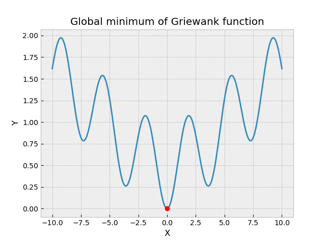
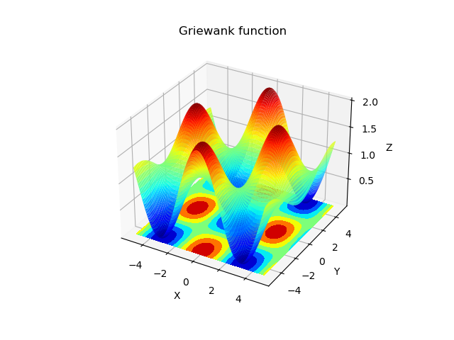
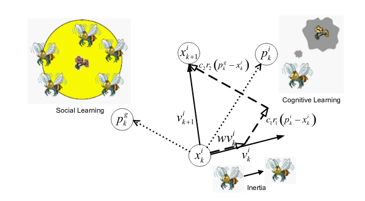
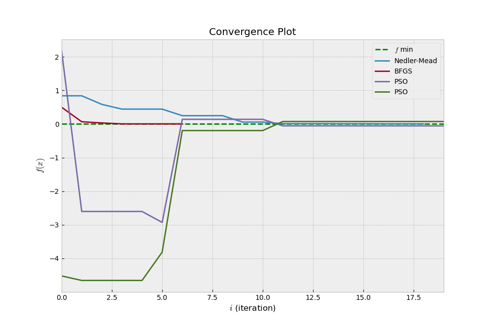
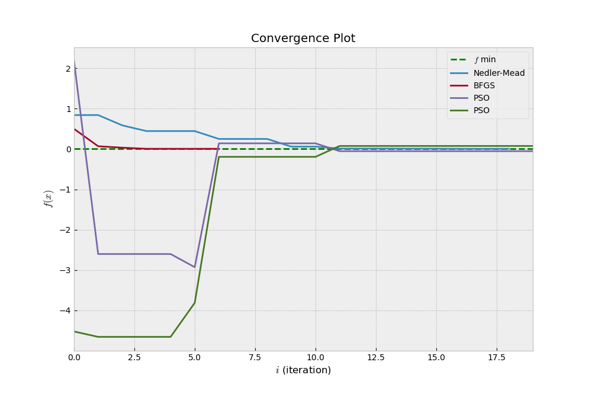
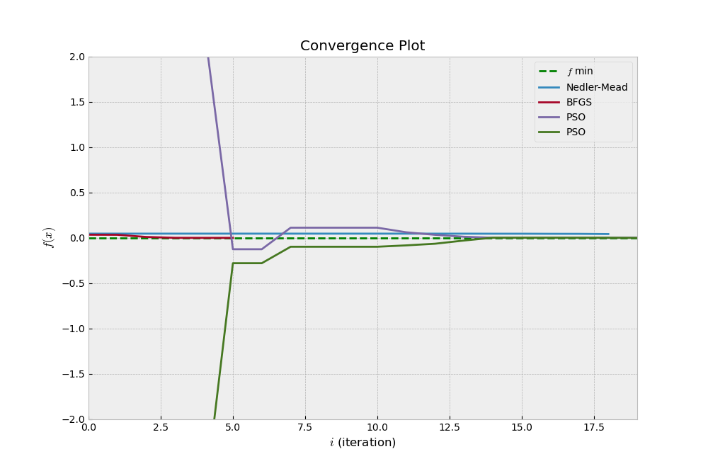
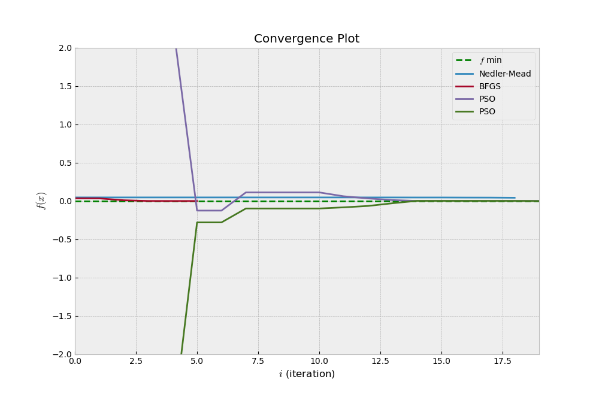

Problem setting¶
Classic optimization methods such as gradient descent and quasi-newton methods perform well for unimodal optimisation. However, these classic methods fail to find the global optimum whenever the function to optimise has discontinuities or multiple local optima.
Below are some examples of these functions that are widely used to test optimisation algorithms.
Figure 1
Griewank Function
Ackley Function
Schaeffer Function
What optimisation algorithm when the objective function is not differentiable?
Derivative free optimisation¶
Several derivative free optimisation also called black-box optimisation aim to solve the above problem. The three main classes of black-box algorithm are :
Direct Algorithms
Stochastic Algorithms
Population Algorithms
The focus of this project will be on a population algorithm called Particle Swarm Optimisation.
Particle Swarm Optimisation¶
Particle swarm optimization (PSO), first proposed by Kennedy and Eberhart in 1995 is one of the most popular swarm-intelligence-based algorithms. This relatively new, modern, and powerful method of optimization has been empirically shown to perform well on many of optimization problems from physical processes to economics. PSO takes its inspiration in the social behavior of animals. It is based on group communication and sharing of individual knowledge when a group of birds or insects searches food. Each member adjusts its movement according to self experience and social interaction. If any member discovers a desirable path to go, the rest of the members will follow quickly. Thus, PSO is a simple, flexible and efficient algorithm compared to other optimisation methods.
PSO Algorithm¶
PSO algorithm searches the space of an objective function by adjusting the trajectories of individual agents, called particles, as the piecewise paths formed by positional vectors in a quasi-stochastic manner. Each particle is attracted toward the position of the current global best and its own best location in history, while at the same time it has a tendency to move randomly. When a particle finds a location that is better than any previously found locations, PSO updates that location as the new current best for particle i. There is a current best for all n particles at any time t during iterations. The aim is to find the global best among all the current best solutions until the objective no longer improves or after a certain number of iterations.
The update of the particle position is given by:
\[x^{i}_{k} + 1 = x^{i}_{k} + v^{i}_{k+1} + ∆t\]
The velocity of the particle is given by:
\[v^{i}_{k+1} = w v^{i}_{k} + c_{1} r_{1} \frac{(p^{i}_{k} − x^{i}_{k})}{∆t} + c_{2} r_{2} \frac{(p^{g}_{k} − x^{i}_{k})}{∆t}\]
\(r_{1}\) and \(r_{2}\) are random numbers in the interval [0,1]
\(p^{i}_{k}\) is particle i best position
\(p^{g}_{k}\) is the swarm’s best particle position at iteration k
\(c_{1}\) is the parameter for the confidence in itself and \(c_{2}\) is the social parameter
w is the inertia weight
Results¶
Figure 2
Ackley function
Griewank function
 

Schaeffer function
 

We observe that Nelder-Mead (direct derivative free algorithm) and BFGS (gradient-based method) converge faster towards the global minimum than PSO if the initial guess is close to the global minimum. Otherwise, it gets stuck in a local minimum (Figure 2a).
Parameter tuning¶
Population size
The algorithm works well for a small number of particles n=10.
Weight factor
From the convergence plots and animations above, we see that the particles overshoot the best regions because of too much momentum. This is likely due to the fixed inertia. In order to control global search, it is better to update dynamically the inertia weight factor. A larger inertia weight factor tends towards global exploration, while a smaller inertia weight factor tends toward fine-tuning of the local search area.
The adaptive inertia weight factor is defined as:
\[\{ w_{min} + \frac{w_{max}-w_{min}}{f_{avg}-f_{min}} , f < f_{avg}\]
\(w_{max}\) and \(w_{min}\) denote the maximum and minimum of w
f is the current objective value of the particle
\(f_{avg}\) and \(f_{min}\) are the average and minimum objective values of all particles
w varies such that particles with low objective values can be protected while particles with objective values over average will be disrupted ( Shi and Eberhart ).
Below is the result for the Ackley function after implementing the adaptive weight factor.
Unconstrained PSO
PS0 with adaptive weight factor update
We observe that the particles converge faster towards the global minimum with the dynamic weight factor update. There is a better balance between exploration and exploitation.
Complexity¶
BFGS
The BFGS complexity is relatively low O(n2).
Nelder-Mead
The Nedler-Mead complexity is low O(1).
PSO
The velocity update requires three complex multiplications and four complex additions per particle per dimension as well as one complex addition for particle update. For n particles of d dimensions each, this leads to a total of 3 dn complex multiplications and 5 dn complex additions. The computational complexity of PSO is highly dependent on the number of particles but it is considered rather low.
Morever, the computational time of PSO is low. PSO (0.001s) is 2 times faster than BFGS (0.002s) and 16 times faster Nelder-Mead (0.016s).
Conclusion¶
To conclude, the population based algorithm PSO is a fast and accurate optimisation method with low memory requirements. That is why it is widely used to solve multi-modal and non-differential and proved performant in image processing ( Ji T.Y ,Lu Z. and Wu Q.H (2007) ).
However, PSO suffers from low convergence but techniques such as the adaptive weight factor update used here or penalty methods enable to overcome this issue.